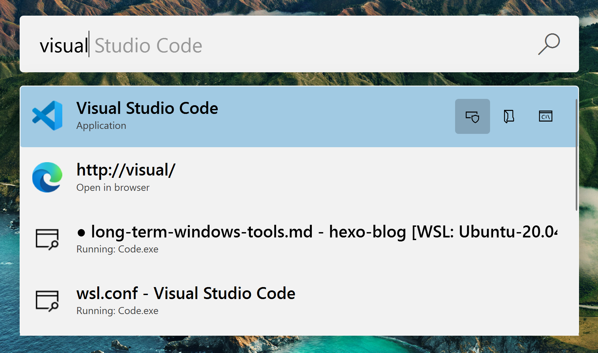
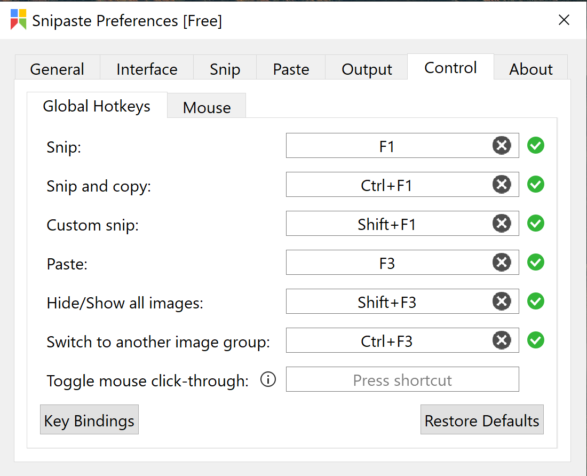
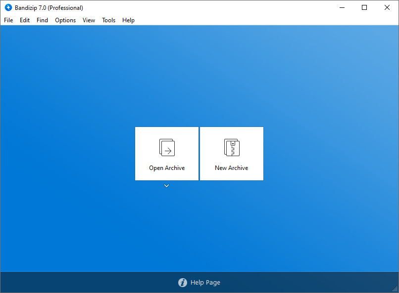
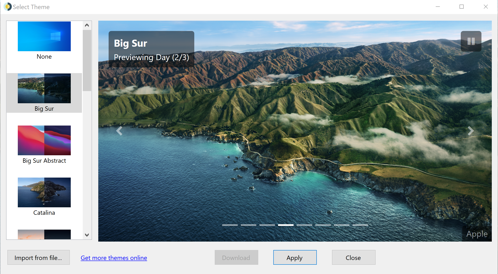
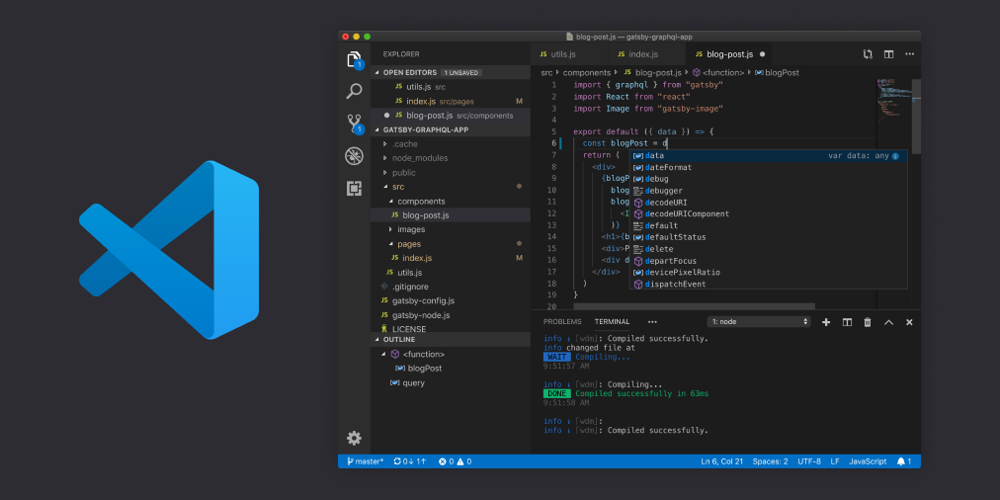

这篇博客主要记录我在Windows 10上使用的一些有提升效率或者花里胡哨的工具，会一直更新下去。毕竟是个软粉嘛。
通用工具
Microsoft PowerToys
Microsoft PowerToys是一组小工具，用户可以利用该工具调整和简化其Windows 10体验，以提高工作效率。

目前支持的功能：
- Color Picker: 一个抓取颜色的小工具。快捷键：
Win + Shift + C。没咋使用过，我对这个工具没啥需求。 - FancyZones: Windows窗口管理工具，可以更加流畅高效地管理窗口布局。没用过。
- File Explorer Add-ons: 增强文件管理器的预览功能，增加了对Markdown，SVG的预览支持。
- Image Resizer: 图片大小调整工具。在图片上“右键”->“Resize Pictures”就能生成特定大小的图片。
- Keyboard Manager: 快捷键管理工具。
- PowerRename: 一个强大的文件重命名工具。在文件管理器中，选中多个文件就可以对多个文件按照指定规则重命名，选中文件夹可以递归重命名下面的文件。
- PowerToys Run: 这是我最常用的一个工具之一，这是非常强大的工具。之后有空的话，单独开一篇聊聊这个工具。快捷键
Alt + Space - Shortcut Guide: 当长按
Windows键时，可以给你一些快捷键的提示。
下载地址：https://github.com/microsoft/PowerToys/releases/
snipaste：一款强大的截图工具
方案一：Windows 自带的 Snip & Sketch 和 Print Screen。Snip & Sketch可以使用快捷键 Win + Shift + S,如果截图使用不多的话，可以使用该工具。
方案二：一个第三方工具snipaste，很强大的一个截图工具，易用性高于Windows 10 自带的工具。下载地址：https://www.snipaste.com/

Bandizip： 解压工具
这是目前我自己最喜欢用的一款解压工具，没有发现明显的痛点。最开始使用的时候，该工具免费版本还没有内嵌广告，现在已经有广告了。

下载地址：https://en.bandisoft.com/bandizip/
EasySwitch：窗口切换工具
虽然在Windows 10上可以使用Alt + Tab切换窗口，但是这个快捷键是跨多个应用的。于我而言，很多时候需要的是在同一个应用之间切换，比如多个Microsoft Word之间切换。
如果需要在多个应用之间切换窗口，可以使用Alt + Tab。
如果需要在同一个应用直接切换窗口可以使用EasySwitch，快捷键 Alt + `
下载地址： https://neosmart.net/EasySwitch/
美化工具
动态壁纸工具： WinDynamicDesktop
该工具在Windows 10 上实现了macOS Mojave的动态壁纸功能。

下载地址：https://github.com/t1m0thyj/WinDynamicDesktop
开发工具
Visual Studio Code
Visual Studio Code，一个很强大的IDE。

下载地址：https://code.visualstudio.com/
Hosts管理工具：Hozz
我有一个小小的内网，里面有很多的服务，目前阶段没有时间做DNS服务器，所以就需要一个随时切换Hosts，因此一款够用的Hosts工具就显得很重要。
Hozz就是这样一款工具，可以帮助我更快捷地访问自己服务。